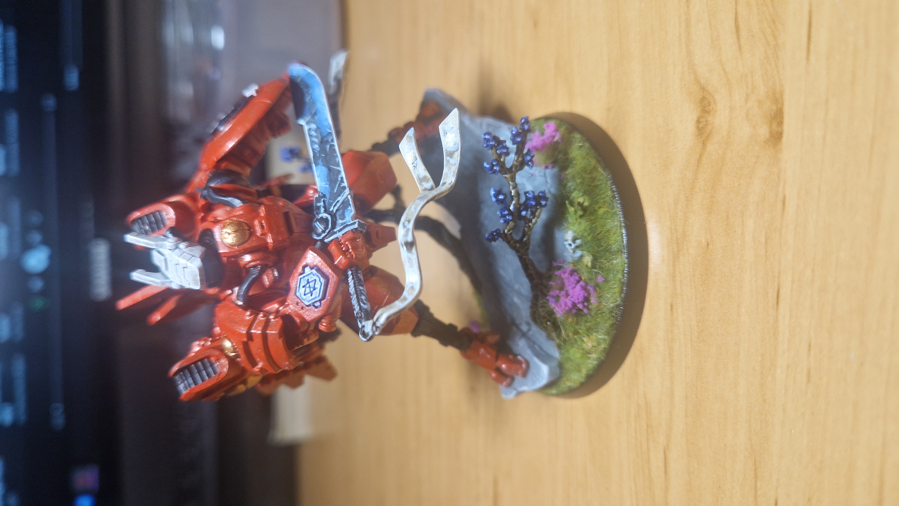

Hi im Marko. Ive been living on this earth for about 18 years and my passions are programming, the gym, collecting stuff and my hobbies. Some of them include: Warhammer 40k and Age of Sigmar, Magic: The Gathering, Video Game development, Video game: Terraria, Minecraft, MTG Arena, Legends of Runeterra, Guily Gear Xrd Revelator 2.
My favourite character from Warhammer 40k is Commander Farsight. He is a renegade Tau leader known for breaking away from the Ethereal-led Tau Empire to forge his own independent enclave. Originally a brilliant and loyal commander, he gained, fame in the brutal campaigns against the Orks, where his tactical creativity and unflinching resolve made him a living legend. However, his experiences on the battlefield and the discovery of an ancient, mysterious relic known as the Dawn Blade led him to question the Ethereals' guidance and the true nature of the Greater Good(the Tau's philosophy). Believing the tau empire was being manipulated, Farsight establoshed the Farsight Enclaves, a faction defined by more pragmatic, hardened worldview. Though viewed as a traitor by the empire, his followers see him as a visionary who recognized dangers ithers refused to confront. 
- Born: 5.12.2006.
- Place of birth: Osijek, Croatia
- Time of death: XX.XX.20XX.
- Place of death: Kepler-B
- Favourite fruit: apricot